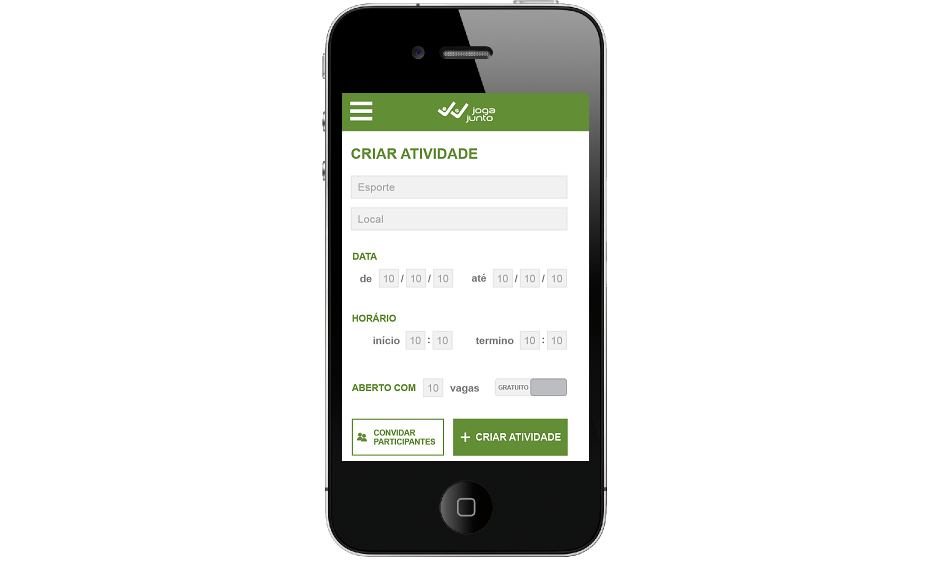

Protótipos JogaJunto
Conectando pessoas através do Esporte
(1) Login
(1.1) Cadastro
(1.2) Esqueci a senha
(2) Principal
(3) Criar um jogo

(3.1) Participantes
(3.2) Jogo Pago
(4) Ver Jogos
(4.1) Jogos de ...
(4.2.1) Participação
(4.2.2) Aguardando aprovação (Participante)
(4.2) Meus Jogos (Participante)
(4.3) Meus Jogos (Quem criou)